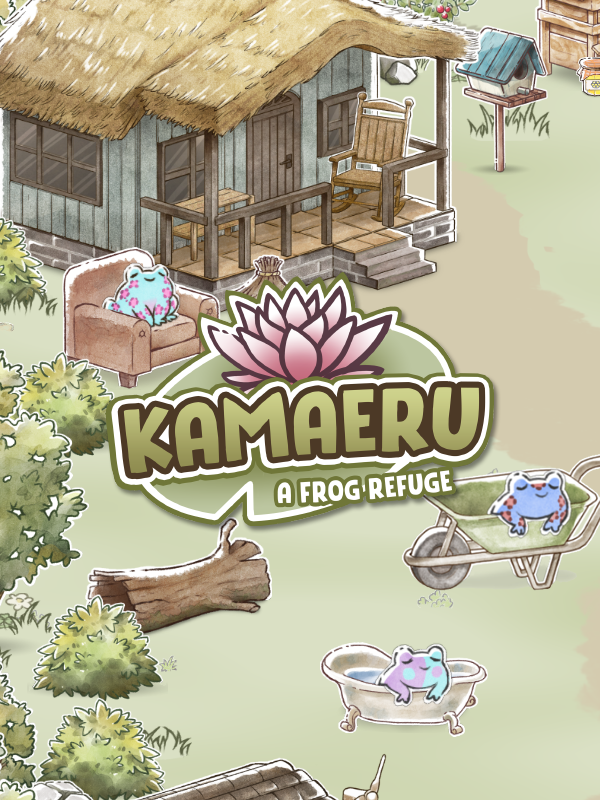

Kamaeru
Kamaeru
Details
|  | |
| Playtime | Not Played |
| Last Activity | Never |
| Added | 8/21/2025 12:12:56 |
| Modified | 9/18/2025 12:09:57 |
| Completion Status | Not Played |
| Library | Epic |
| Source | Epic |
| Platform | Epic Games |
| Release Date | 6/8/2024 |
| Community Score | |
| Critic Score | |
| User Score | |
| Genre | Casual Simulation |
| Developer | Humble Reeds |
| Publisher | Armor Games Studios |
| Feature | Single-Player |
| Links | Steam Official Website Itch Discord Bluesky Epic Nintendo |
| Tag | [GGDeals] Synced |
Description
Kamaeru is a cozy frog collecting game about farming and preserving nature. You play as a kind soul helping an old friend restore the wetlands of your childhood by transforming them into a safe haven for friendly little frogs. With the help of the game’s cast of welcoming NPCs, you will photograph and breed frogs to increase your reputation, decorate your frog refuge, and plant native crops to help your amphibian abode thrive!
Collect frogs 🐸
Feed, breed, collect, and raise all of the game’s 500+ frogs! 🐸 It’s up to you to figure out the secret to attracting new and adorable frogs. You can complete your collection by unlocking all the rare colors through a special breeding mini-game. When new ones join your refuge, use the in-game camera to take photos of them and collect them for your frogedex!Restore the wetlands 🌾
In order to succeed in your quest for frog preservation, you will need to restore the nearby wetlands to their former glory. This will allow you to continually support and cultivate the area through a process known as paludiculture!Dig ponds to let water roam the land again and plant native wetlands species to harvest precious crops. From there, you can transform your pickings into manufactured goods that can be sold to improve your froggy habitat further!